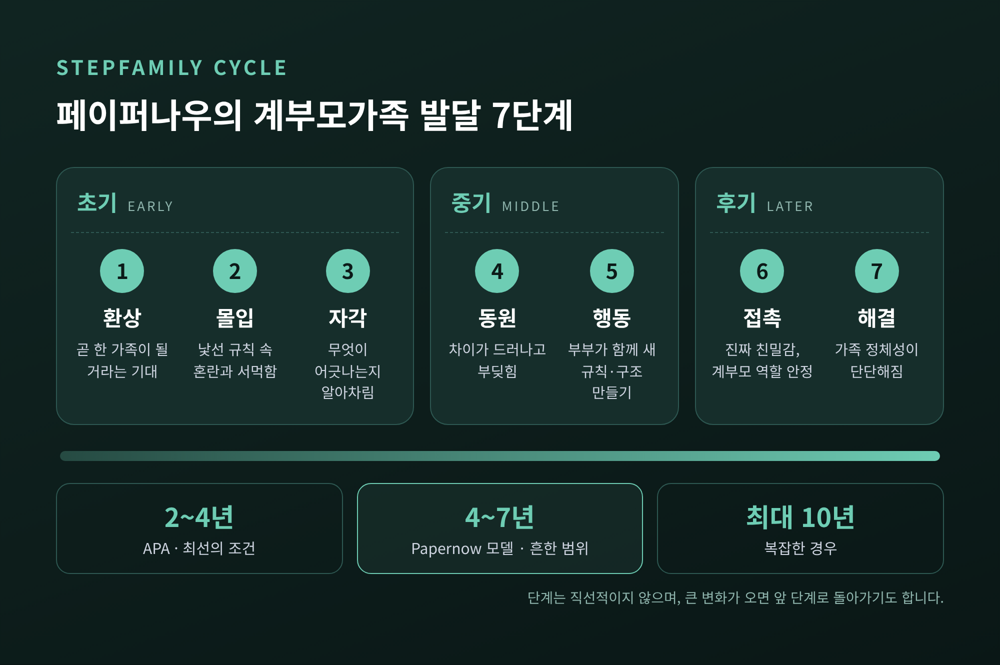
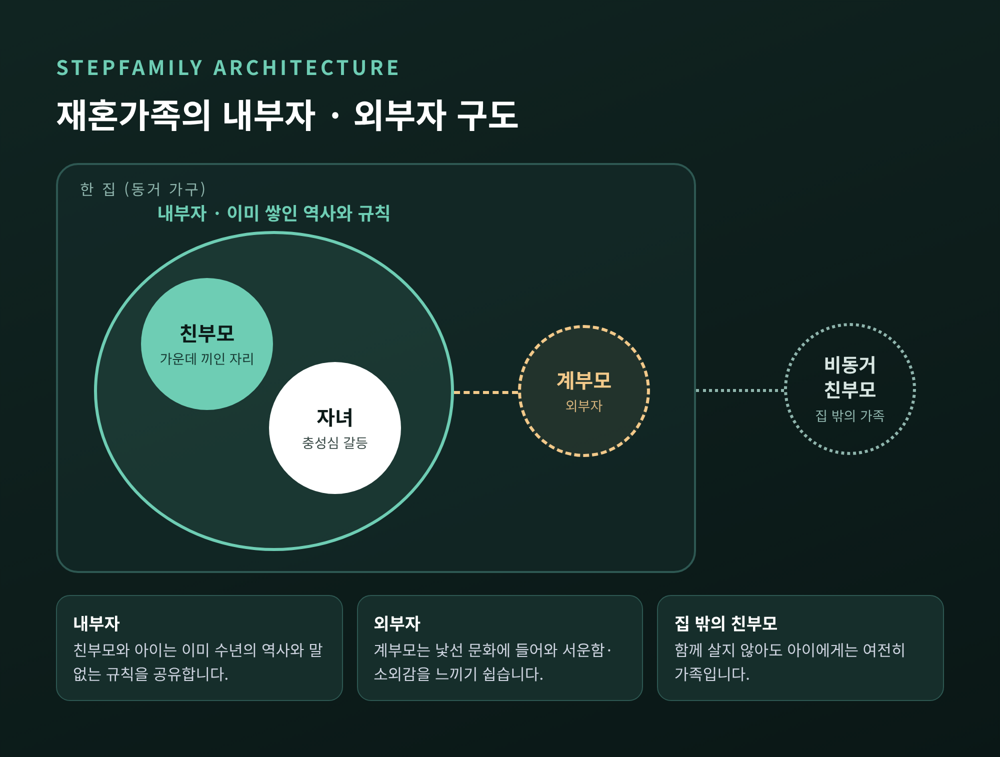
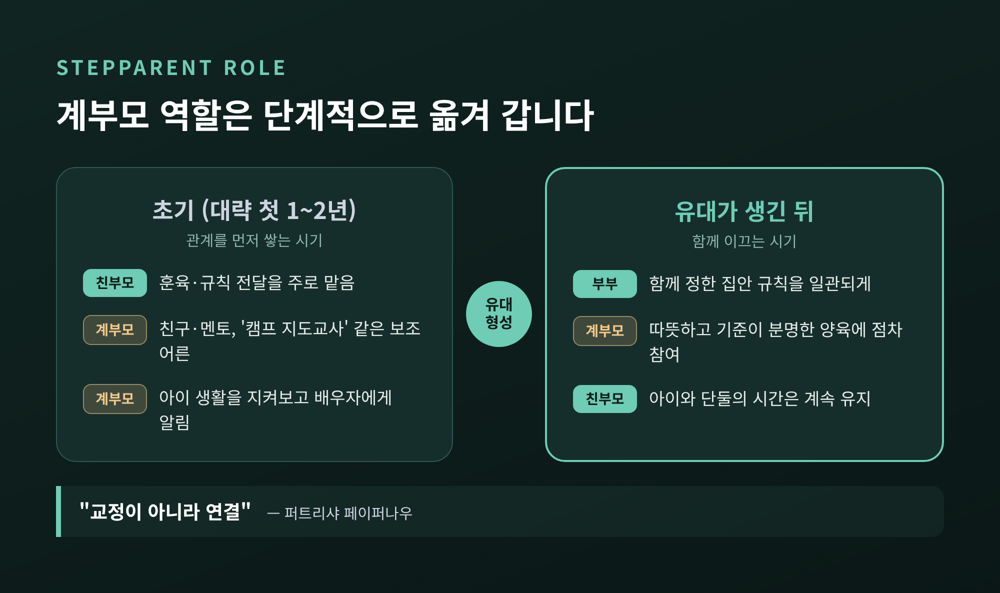
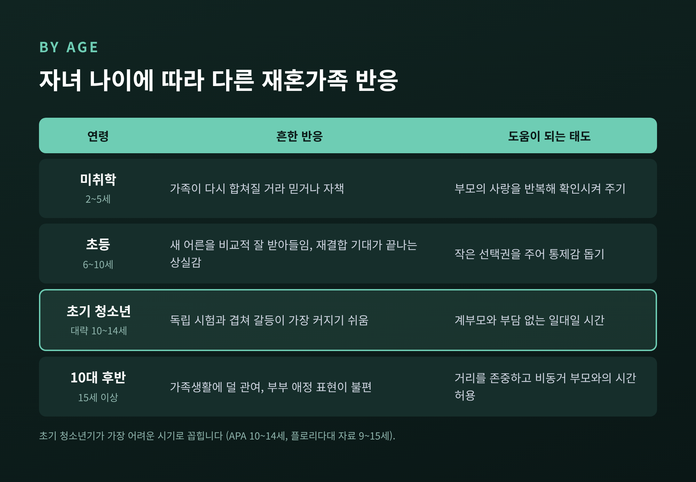
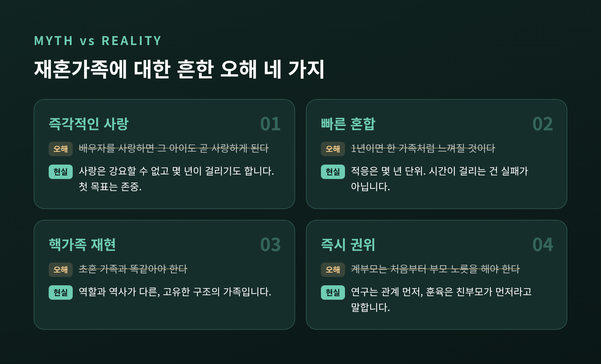

재혼가족 적응, 새 부모와 아이가 가족이 되기까지 걸리는 시간

이번 글에서는 재혼가족, 흔히 계부모가족이나 혼합가족이라 부르는 가족이 하나의 가족으로 자리 잡기까지의 과정을 정리해 보겠습니다. 가족상담에서 다루는 연구와 개입 방법을 중심으로, 왜 시간이 걸리는지와 그동안 무엇을 하면 좋은지를 함께 살핍니다.
먼저 핵심부터 말씀드리겠습니다.
- 재혼가족이 안정되기까지는 몇 달이 아니라 몇 년이 걸립니다. 자료에 따라 최선의 조건에서 2~4년, 계부모가족 연구자 퍼트리샤 페이퍼나우(Patricia Papernow)의 설명으로는 흔히 4~7년입니다.
- 초혼 가족과 출발선의 구조 자체가 다릅니다. 유대는 부부보다 친부모와 아이 사이에 먼저 놓여 있습니다.
- 계부모는 처음부터 훈육하기보다 관계를 먼저 쌓고, 훈육은 친부모가 맡는 편이 낫다는 것이 여러 연구의 공통된 결론입니다.
■ 우리나라에서 재혼가족은 얼마나 될까
국가데이터처가 2026년 3월 발표한 '2025년 혼인·이혼 통계'에 따르면, 지난해 혼인은 24만 건이었습니다.
그중 남녀 모두 초혼인 경우가 82.6%, 남녀 모두 재혼인 경우가 9.0%였습니다.
대략 열한 쌍 중 한 쌍은 두 사람 모두 두 번째 출발이라는 뜻입니다. 평균 재혼 연령은 남자 51.9세, 여자 47.5세로 집계됐습니다.
물론 모든 재혼이 자녀를 동반하지는 않습니다. 다만 재혼가족의 고민이 일부 가정만의 특별한 일이 아니라는 점은 분명합니다.
■ 가족이 되기까지, 몇 년 단위의 여정
재혼가족 적응 기간을 묻는 분이 많습니다. 결론부터 말하면, 하나의 정답 숫자는 없습니다.
미국심리학회(APA)는 최선의 조건에서도 함께 사는 데 적응하기까지 2~4년이 걸린다고 안내합니다. 재혼가족 연구의 선구자인 비셔 부부(Emily & John Visher)는 대부분의 가족이 약 4년, 10대 자녀가 있으면 더 걸린다고 보았습니다.
페이퍼나우의 모델을 소개하는 자료들은 4~7년을 흔히 인용하고, 복잡한 경우 최대 10년까지 걸릴 수 있다고 덧붙입니다.
숫자는 달라도 방향은 같습니다. 몇 주나 몇 달이 아니라 '몇 년'이라는 점입니다.
페이퍼나우는 이를 "패스트푸드가 아니라 슬로쿠커"에 비유했습니다. 그가 정리한 '계부모가족 주기(Stepfamily Cycle)'는 일곱 단계로 이루어집니다.

- 초기(환상·몰입·자각): 어른들은 곧 화목한 한 가족이 되리라 기대하며 시작합니다. 실제로는 낯선 규칙과 서먹함 속에서 혼란을 겪고, 무엇이 어긋나는지 서서히 알아차립니다.
- 중기(동원·행동): 서로의 차이가 겉으로 드러나 부딪칩니다. 이 시기를 거치며 부부가 함께 새 규칙과 구조를 만들어 갑니다.
- 후기(접촉·해결): 꾸미지 않은 친밀감이 생기고, 계부모의 역할이 안정됩니다. 가족만의 정체성이 단단해집니다.
단계는 곧게 이어지지 않습니다. 이사나 전학, 아이의 사춘기처럼 큰 변화가 오면 이전 단계로 돌아가기도 합니다.
초기의 흔들림은 연구에서도 확인됩니다. 헤더링턴(E. Mavis Hetherington)과 클링엠필의 종단 연구(1992)는 재혼 후 첫 2년 동안 가족 관계가 흔들리고 갈등이 많았다고 보고했습니다. 그러니 첫해의 어색함을 실패의 신호로 읽을 필요는 없습니다.
■ 초혼 가족과 출발선이 다른 이유
재혼가족이 겪는 어려움은 누군가의 성격 탓이기보다 구조에서 비롯되는 경우가 많습니다. 페이퍼나우는 임상 지침에서 재혼가족의 다섯 가지 과제를 이렇게 정리했습니다.
- 내부자와 외부자의 위치가 강렬하고, 쉽게 바뀌지 않는다.
- 아이는 상실, 충성심 갈등, 잇단 변화 속에서 힘들어한다.
- 양육과 훈육 문제가 부부를 갈라놓기 쉽다.
- 서로 다른 가족 문화 사이에서 새 문화를 만들어야 한다.
- 집 밖의 다른 친부모도 가족의 일부다.

내부자와 외부자
초혼 부부는 대개 아이가 태어나기 전 둘만의 시간을 보냅니다. 애착과 일상을 먼저 쌓은 뒤 아이를 맞이합니다.
재혼가족은 반대입니다. 친부모와 아이는 이미 수년간의 역사, 말하지 않아도 통하는 규칙을 공유합니다. 계부모는 그 낯선 문화 속으로 들어오는 '외부자'입니다. 페이퍼나우는 이 구조를 '계부모가족 건축(stepfamily architecture)'이라 불렀습니다.
외부자인 계부모는 투명인간이 된 듯한 서운함을 느끼기 쉽습니다. 친부모는 배우자와 아이 사이에 끼어 양쪽의 마음을 다 헤아려야 합니다.
아이의 충성심 갈등
아이에게 새 부모를 좋아하는 일은 간단하지 않습니다. 계부모와 가까워지는 것이 집 밖에 있는 친부모를 배신하는 것처럼 느껴질 수 있기 때문입니다. 그 부모가 멀리 살거나 세상을 떠났더라도 마찬가지입니다.
그래서 아이 앞에서 다른 친부모를 비난하지 않는 것이 중요합니다. 학대 같은 위험이 없다면, 양쪽 친부모와의 관계가 이어지는 편이 대체로 아이에게 좋습니다. 연락이 끊긴 부모는 아이 마음속에서 이상화되기 쉽고, 계부모는 그 환상을 넘어서기 어렵습니다.
결국 핵심은 어른들의 갈등
페이퍼나우는 아이의 안녕을 가장 해치는 것은 재혼가족이라는 형태가 아니라 어른들 사이의 갈등이라고 강조합니다. 또 하나의 관찰도 있습니다. "변화의 속도가 빨라질수록 아이의 안녕은 낮아진다"는 것입니다.
■ 계부모의 역할, '교정'보다 '연결'을 먼저
재혼가족 상담에서 가장 자주 나오는 질문은 훈육입니다. 연구의 답은 꽤 일관됩니다.
- 계부모가 일찍 훈육자로 나서면 아이의 저항을 부르기 쉽다(Bray 1999; Coleman 외 2000; Papernow 2006).
- 계부모가 이른 시기에 훈육 역할을 맡는 것은 아이의 부정적 결과와 관련이 있었다(Hetherington & Kelly 2002).
- 재혼가족 연구자 제임스 브레이(James Bray)는 첫 1~2년 동안 계부모가 훈육하지 않는 보조 역할을 맡으라고 권합니다. 그렇지 않으면 잘하고 있어도 아이가 밀어낸다는 것입니다.
APA의 안내도 같은 방향입니다. 처음에는 훈육자보다 친구나 '캠프 지도교사'에 가까운 역할을 하라는 것입니다. 단단한 유대가 생길 때까지 통제와 훈육은 친부모가 맡습니다. 그동안 계부모는 아이의 생활을 지켜보고 배우자에게 알려 주는 역할을 합니다.
페이퍼나우는 이를 한 문장으로 정리했습니다. "교정(correction)이 아니라 연결(connection)."

그렇다고 계부모가 영영 뒤로 물러나 있으라는 뜻은 아닙니다. 자리를 잡은 재혼가족에서는 일부 청소년이 계부모의 '권위 있는(authoritative)' 양육, 즉 따뜻하면서도 기준이 분명한 양육에 잘 반응했다는 보고도 있습니다(Hetherington 1999). 순서의 문제입니다.
관계를 쌓는 방법은 생각보다 소박합니다. 계부모와 좋은 관계라고 답한 성인 의붓자녀 38명을 면담한 브레이스웨이트(Dawn O. Braithwaite) 연구팀의 연구가 있습니다. 관계가 좋아진 전환점으로 가장 많이 꼽힌 것은 계부모의 평소와 다른 배려(18%)와 함께 보낸 시간(17%)이었습니다. 둘 다 돈이나 전문 지식이 필요하지 않습니다.
가상의 예를 하나 들어 보겠습니다. 열두 살 아이를 키우던 어머니가 재혼했습니다. 새아버지는 첫 달부터 귀가 시간과 휴대전화 사용 규칙을 정하려 했습니다. 아이는 방문을 닫았고, 부부는 매일 저녁 언쟁을 벌였습니다.
상담에서 부부는 역할을 다시 나눴습니다. 규칙은 어머니가 전하고, 새아버지는 일주일에 한 번 아이와 자전거를 타는 시간만 맡기로 했습니다. 갈등이 사라지지는 않았습니다. 다만 몇 달 뒤 아이가 먼저 "이번 주에도 타요?"라고 묻는 날이 왔습니다.
■ 아이의 나이에 따라 반응이 다르다
같은 재혼이라도 아이의 나이에 따라 받아들이는 방식이 크게 다릅니다. 여러 자료가 공통으로 지목하는 시기는 초기 청소년기입니다. APA는 10~14세를, 플로리다대 자료는 9~15세를 특히 어려운 시기로 봅니다.

- 미취학(2~5세): 원래 가족이 다시 합쳐질 수 있다고 믿거나 스스로를 탓하기도 합니다. 부모의 사랑을 반복해서 확인시켜 주는 것이 도움이 됩니다.
- 초등학생(6~10세): 대체로 새 어른을 비교적 잘 받아들입니다. 다만 부모의 재혼은 '엄마 아빠가 다시 합칠지도 모른다'는 기대를 끝내는 일이기도 합니다.
- 초기 청소년(대략 10~14세): 독립을 시험하는 시기와 겹쳐 갈등이 커지기 쉽습니다. 사랑의 역사가 없는 계부모는 반발의 손쉬운 표적이 됩니다. 그래서 오히려 계부모와의 가벼운 일대일 접촉이 더 필요하다는 조언도 있습니다.
- 10대 후반(15세 이상): 양육이 덜 필요하고 가족생활에 덜 관여합니다. 부부의 애정 표현을 불편해하거나, 한부모 시절 맡았던 어른 같은 역할을 잃는 데 서운함을 느끼기도 합니다.
APA는 또 하나의 세심한 점을 짚습니다. 의붓자녀들은 포옹 같은 신체적 애정보다 칭찬 같은 말로 하는 애정을 더 편하게 여기는 경향이 있습니다.
■ 부부를 지키고, 우리만의 의례를 만들기
재혼가족에서 부부 관계는 가장 늦게 만들어졌지만 가족 전체를 받치는 기둥입니다. 브레이는 단단한 부부 유대가 모두에게 이롭다고 말합니다.
APA는 정기적인 데이트나 아이 없는 여행처럼 부부만의 시간을 우선순위에 두라고 권합니다. 재혼 전에 돈 관리, 거주 방식, 계부모의 역할을 미리 이야기해 두는 것도 도움이 됩니다.
동시에 지켜야 할 시간이 하나 더 있습니다. 친부모와 아이 단둘의 시간입니다. 페이퍼나우는 이 시간이 "규칙적이고 믿을 수 있게" 주어져야 한다고 말합니다. 아이는 새 가족을 '부모의 관심을 잃는 일'로 느끼기 쉽기 때문입니다.
부부 시간과 친자녀 시간은 충돌하는 것처럼 보입니다. 실제로는 둘 다 있어야 서로를 덜 빼앗긴다고 느낍니다.
가족 의례도 새로 만들 만합니다. 예전 가족의 명절 방식을 그대로 옮기기보다, 일요일 아침 함께 만드는 팬케이크처럼 작고 부담 없는 것에서 시작하는 편이 낫습니다. 브레이스웨이트 연구에서도 '의례 만들기'는 관계가 좋아진 전환점 가운데 하나였습니다.
■ 흔한 오해 네 가지
재혼가족을 가장 힘들게 하는 것은 현실보다 기대일 때가 많습니다. 브레이의 9년 종단 연구에서도 즉각적인 화합 같은 비현실적 기대를 품은 '낭만형' 가족이 이혼 위험이 가장 높았습니다.

- 즉각적인 사랑: 배우자를 사랑하면 그 아이도 곧 사랑하게 된다는 믿음입니다. 사랑은 강요할 수 없고 몇 년이 걸리기도 합니다. 처음의 현실적인 목표는 서로에 대한 존중입니다.
- 빠른 혼합: 1년이면 한 가족처럼 느껴질 거라는 기대입니다. 이 기대가 크면 시간이 걸리는 것 자체를 실패로 받아들이게 됩니다.
- 핵가족 재현: 초혼 가족과 똑같은 모습이어야 한다는 생각입니다. 역할과 역사가 다른 가족을 이상화된 초혼 가족과 비교하면 늘 모자라 보일 뿐입니다.
- 계부모의 즉시 권위: 어른이니 처음부터 부모 노릇을 해야 한다는 생각입니다. 앞에서 보았듯 연구는 반대 방향을 가리킵니다.
예전에는 재혼가족을 '핵가족을 다시 만드는 일'로 여기곤 했습니다. 지금 가족상담에서는 재혼가족을 고유한 구조를 가진 다른 형태의 가족으로 봅니다.
■ 가족상담은 무엇을 도와줄까
재혼가족 상담은 대개 한 사람의 문제를 고치기보다 가족이라는 체계 전체를 봅니다.
구조적 가족치료를 만든 살바도르 미누친(Salvador Minuchin)은 문제가 개인이 아니라 가족체계 안에 있다고 보았습니다. 이 관점에서 상담자는 부부, 부모, 자녀라는 하위체계와 그 사이의 경계, 위계를 살핍니다. 재혼가족에 적용하면 이런 질문이 됩니다.
- 부부라는 하위체계는 충분히 단단한가.
- 친부모와 아이 사이 경계가 지나치게 밀착되어 계부모가 들어갈 틈이 없지는 않은가.
- 아이가 한쪽 어른과 다른 어른에 맞서는 연합에 끌려들어가 있지는 않은가.
페이퍼나우는 재혼가족 상담을 세 수준으로 나눕니다. 재혼가족의 특성을 알려 주는 심리교육, 가족 사이 대화 방식을 바꾸는 대인관계 작업, 각자의 원가족 경험에서 오는 상처를 다루는 작업입니다. 많은 가족이 첫 번째 단계, 즉 "이게 정상이구나"를 아는 것만으로도 숨통이 트입니다.
국내 연구도 있습니다. 김미옥·천성문(2014)은 재혼가족 부모를 위한 6회기 부모교육 프로그램을 개발했습니다. 그 결과 부모의 역할 긴장과 양육 스트레스는 줄고, 부모자녀관계 만족도와 심리적 안녕감은 높아졌다고 보고했습니다.
한계도 분명히 말씀드려야겠습니다. 상담이 재혼가족에 필요한 시간 자체를 없애 주지는 못합니다. 다만 그 시간을 덜 다치며 지나가도록 도울 수 있습니다.
정리하면 이렇습니다.
재혼가족이 겪는 어색함과 갈등의 상당 부분은 실패가 아니라 이 가족 형태가 원래 지나가는 길입니다. 친부모가 훈육을 맡고, 계부모는 천천히 관계를 쌓고, 부부와 친자녀의 시간을 함께 지키는 것. 이 순서를 지키면 대부분의 가족은 결국 자기만의 모습을 찾아갑니다.
"재혼가족은 만들어지는 것이 아니라 자라는 것입니다."
언제쯤 진짜 가족이 되느냐고 물으신다면, 서두르지 않는 가족일수록 그날이 먼저 온다고 답하겠습니다.
도움이 필요하다면 가족 갈등이 오래 이어지거나 아이나 어른 중 누군가가 지속적인 우울, 불안, 위축을 보인다면 혼자 버티지 마시고 전문 가족상담사의 도움을 받아 보시길 권합니다. - 가족센터 대표전화 1577-9337: 전국 가족센터에서 가족상담, 부모교육, 자녀양육 교육 등을 안내합니다. - 자살예방 상담전화 109: 2024년부터 자살예방·정신건강 상담 번호들을 하나로 통합한 번호입니다. 마음이 위급하다고 느껴질 때 연락하실 수 있습니다.
이 글은 일반적인 정보 제공을 위한 것이며, 개별 가족에 대한 진단이나 상담을 대신하지 않습니다. 글에 나온 사례는 이해를 돕기 위해 일반화한 가상 사례입니다.
참고 자료
- 국가데이터처, 2025년 혼인·이혼 통계(2026.3.19 발표) — 이투데이, 머니투데이 보도
- APA, Stepfamily / APA Monitor, Making stepfamilies work(2005)
- Papernow, Clinical Guidelines for Working With Stepfamilies
- NPR, The Key To Stepparenting: Be Patient, It Takes Time(2021) / NPR, Blended families are common(2024)
- Cartwright(2010), New Zealand Journal of Psychology
- BYU Forever Families, Recognizing Stepfamily Myths / UF IFAS, Stepfamily Myths and Realities
- University of Minnesota Extension, How age affects children's adjustment to stepfamilies
- UNL, Study finds positive turning points in stepfamilies(2018)
- 김미옥·천성문(2014), 재혼가족의 생활적응향상을 위한 부모교육 프로그램 개발 및 효과
- 대한민국 정책브리핑, 가족센터 안내 / 자살예방 상담번호 109 통합
#재혼가족 #재혼가족적응 #계부모 #혼합가족 #계부모역할 #가족상담 #충성심갈등 #새엄마새아빠 #가족센터